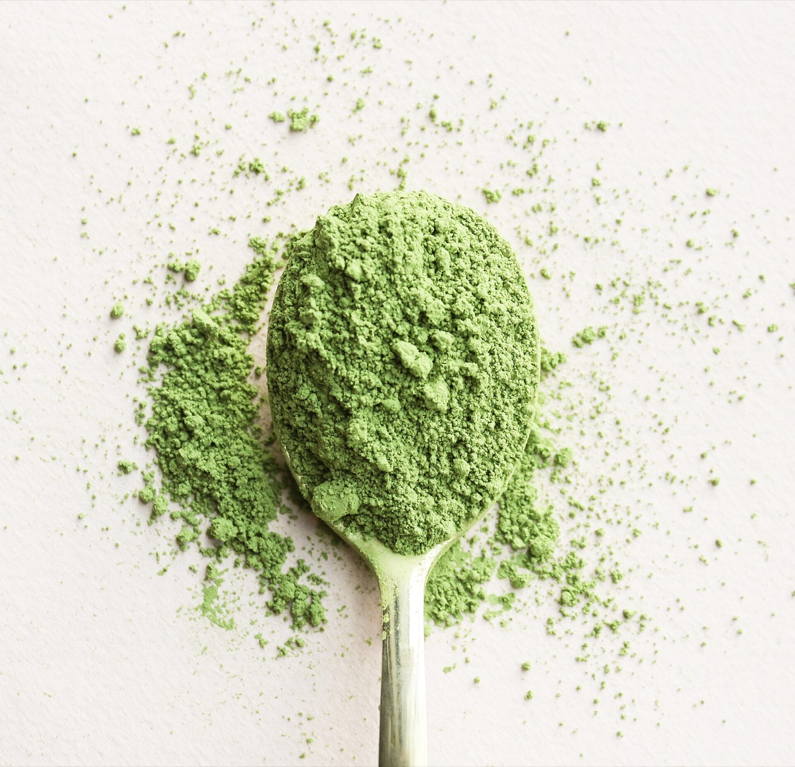
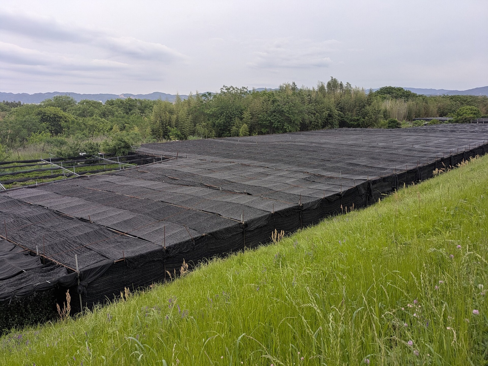
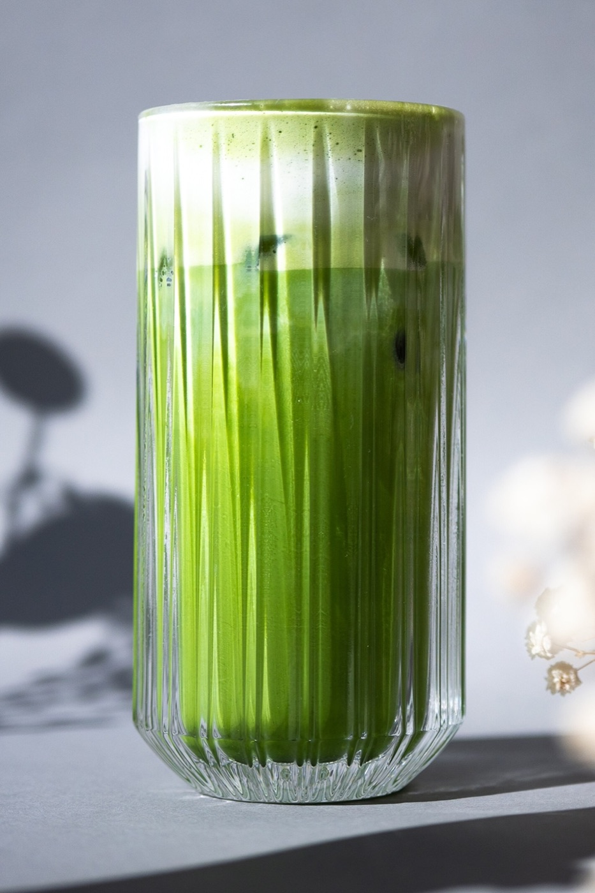

Process
From shaded field to fine powder: how matcha is made
Shade, steam, flat drying and milling each shape color and flavor. A short walk through the traditional process.
FJK Wellness · Matcha only
Matcha is all we do. We supply every grade from the highest ceremonial to latte, with stable supply through contracts with three farms in Japan.
I want to
Why FJK Wellness
We carry matcha and nothing else, so every conversation with us is about your matcha.
Contracts with three farms in Japan let us supply your orders steadily.
Buy your straight-served ceremonial matcha and your latte matcha from the same partner.
Matcha grades
Pricing and product details are shared directly by email or phone.

What is matcha?
Matcha starts as tencha, a tea grown under shade and dried without rolling, then milled into powder. That process gives it its vivid color and umami.
How matcha is traditionally made in Japan. Figures come from Japanese tea industry sources. The video at the top of this page is illustrative footage from Pexels (Charlotte May), not our production.
Journal
Practical guides for the people who order, prepare and sell matcha.

Process
Shade, steam, flat drying and milling each shape color and flavor. A short walk through the traditional process.
Buying
Grade names are trade language, not legal categories. Here is what they usually mean and how to test a sample.

For cafés
A starting recipe for hot and iced lattes, plus the storage habits that keep color and aroma.
Samples are free, with shipping charged separately. Pickup is free. Wholesale inquiries: the minimum order is 5 kg.